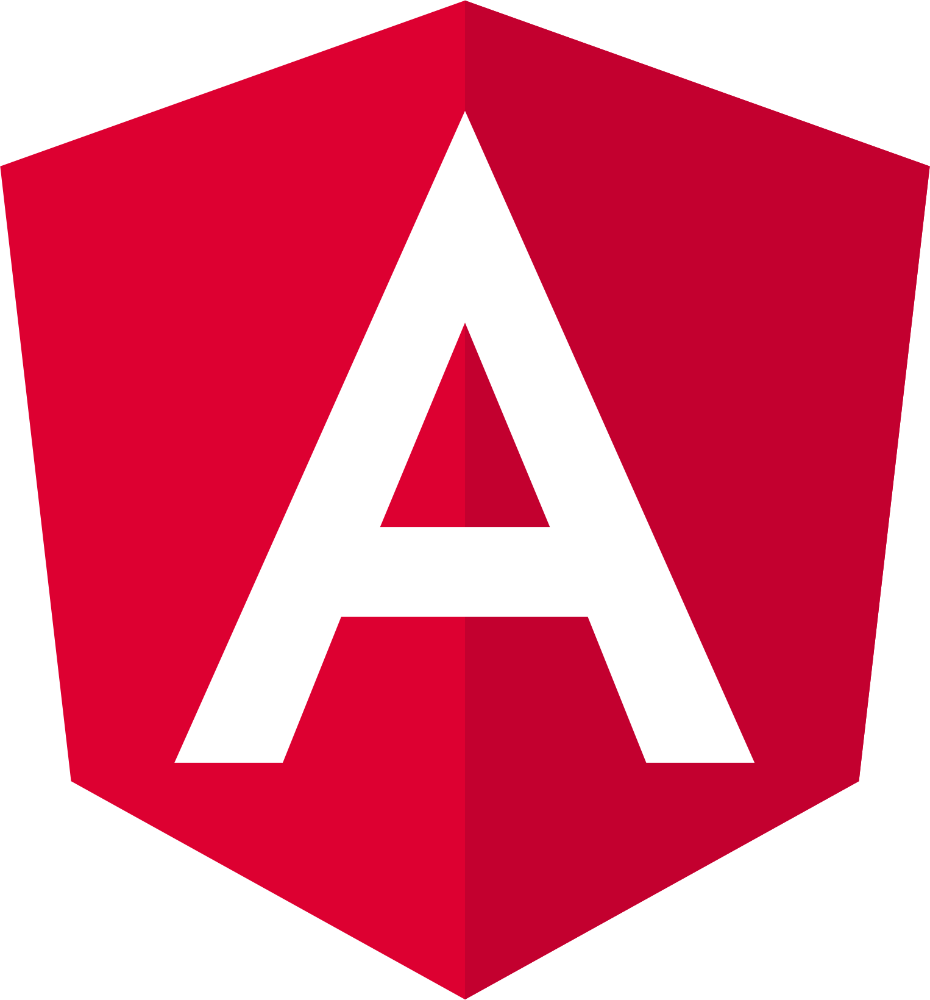

<div class="main-container">
    <div class="snapon-container">
        <!-- First row -->
        <div class="firstRow">
            <div class="title">
                <span>Frontend Developer</span>
               </div>
               <div class="subTitle">
                &#64; Snapon, Bucharest Romania
               </div>
        </div>
        <div class="experience-description secondRow">
            <span>
                In my position as a developer, I directed the front-end team for three projects and as a project manager, I also managed the planning, organization, and
                implementation of an inventory management application.
                <br> In addition to handling all Agile documentation and meetings, I created technical specifications.
                <br>As a senior front-end developer, I supported team members in their growth, contributed to new project initiatives, made
                architectural choices, created documentation, and set standards for code reviews and workflow improvements.
                <br>With a focus on mentorship, I provided individualized guidance, helping team members navigate complex challenges and refine their skills. This approach not only
                enhanced our projects but also cultivated a strong, supportive team culture where everyone could thrive.
            </span>
        </div>
        <div class="technologies">
            
            
            
            
            
        </div>
        <div class="technologies">
            
            
            
            
            
        </div>
        </div>
</div>

<!-- Second Row -->
         <!-- <div class="experience-list">
            <ul>
                <li>
                    <p>Led the front-end team across three significant projects, managing the development process and ensuring alignment with both project objectives and deadlines.</p>
                </li>
                <li>
                    <p>Skillfully designed and implemented a variety of ETL (Extract, Transform, Load) flows, jobs, and objects, significantly streamlining data processing workflows and enhancing overall system performance and reliability.</p>
                </li>
                <li>
                    <p>Oversaw the planning and organization of an inventory management application project, from initial conception through to final implementation, handling every phase of the process.</p>
                </li>
                <li>
                    <p>Administered Agile methodologies, including the creation and management of Agile documentation and facilitation of meetings to maintain smooth project execution.</p>
                </li>
                <li>
                    <p>Followed a structured workflow that included ticket estimation, thorough code reviews, and rigorous testing procedures, ensuring high-quality deliverables and consistent project success.</p>
                </li>
                <li>
                    <p>Developed thorough technical specifications to outline project requirements and provide clear guidance for the development team.</p>
                </li>
                <li>
                    <p>Enhanced team development by offering mentorship and direction, assisting team members in skill advancement and career progression.</p>
                </li>
                <li>
                    <p>Played an active role in new project initiatives, engaging in the brainstorming and creation of innovative solutions and features.</p>
                </li>
                <li>
                    <p>Made pivotal architectural choices and selected suitable technologies and design patterns to ensure the delivery of robust and scalable solutions.</p>
                </li>
                <li>
                    <p>Compiled and maintained detailed documentation to offer clear instructions and standards for development practices and project requirements.</p>
                </li>
                <li>
                    <p>Established and maintained rigorous standards for code reviews and workflow optimization, adopting best practices to improve code quality and team productivity.</p>
                </li>
                <li>
                    <p>Provided tailored support to team members, helping them overcome technical challenges and enhance their skills.</p>
                </li>
                <li>
                    <p>Fostered a collaborative and growth-oriented team culture, creating an environment where members are encouraged to thrive and contribute effectively.</p>
                </li>
                <li>
                    <p>Introduced and managed continuous integration and development practices, streamlining build and deployment processes to enhance efficiency and minimize errors.</p>                </li>
              </ul>
         </div> -->
    


